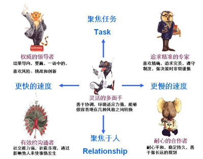

PDP性格测试
35275 人测试过
2013-07-18 发布

② 本测试共包括单项选择题合计30题，完成测试约需要15分钟
③ 测试不可重复，做题时请按实际情况作答，系统会基于答题情况自动生成一份专业报告
④ 测试完成后，你可以在个人中心查看随时查看测试报告
开始测试
你是老虎、孔雀、考拉，还是猫头鹰、变色龙？五种特质没有不好，只有不同，而且与能力等没有关系
目前是全球最大的个性特质与人才培养的顾问公司之一，专注于领导力开发及组织发展，总公司在美国已有数十年历史，目前全球已有三十多国家使用PDP系统
PDP(Professional DynaMetric Programs)，是一种提供简明直接的程序以测量自我认识的动态综合系统，由美国南加州大学统计科学研究所与科罗拉多大学行为科学研究所共同发明的专利，在国内俗称五种动物性格测试。26年来全球已累积有1600万人次有效计算机案例，5000余家企业、研究机构与政府组织持续追踪其有效性。96%的准确度、34个国家使用、12种语言版本，可以广泛运用于组织调整、个人盘点、招聘选才、培训需求分析、沟通与激励等。。PDP客户包括500余家跨国企业和数十万中小企业如通用汽车、花旗银行、飞利浦、IBM、惠普、屈臣氏、爱普生、强生、西北航空......国内企业如联想控股、神州数码、TCL等知名企业一直采用,清华大学、中欧商学院EMBA亦采用本系统，为学员分析优劣势。
温馨提示:
① 本测试为付费测试，体验价格为：0.00元② 本测试共包括单项选择题合计30题，完成测试约需要15分钟
③ 测试不可重复，做题时请按实际情况作答，系统会基于答题情况自动生成一份专业报告
④ 测试完成后，你可以在个人中心查看随时查看测试报告
体验价￥0.00原价￥5.00
猜你喜欢：